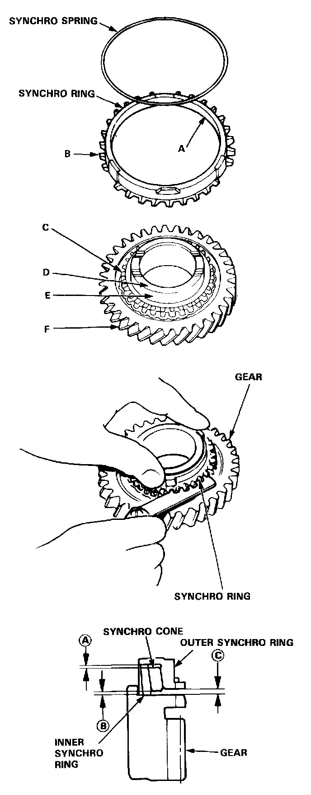

Synchronizer Ring: Testing and Inspection

Inspection
1. Inspect the synchro ring and gear.
A: Inspect the inside of the synchro ring for wear.
B: Inspect the synchro sleeve teeth and matching teeth on the synchro ring for wear (rounded off).
C: Inspect the synchro sleeve teeth and matching teeth on the gear for wear (rounded off).
D: Inspect the gear hub thrust surface for wear.
E: Inspect the cone surface for wear and roughness.
F: Inspect the teeth on all gears for uneven wear, scoring, galling and cracks.
2. Coat the cone surface of the gear with oil and place the synchro ring on the matching gear. Rotate the ring, making sure that it does not slip.
Measure the clearance between the synchro ring and gear all the way around.
NOTE: Hold the synchro ring against the gear evenly while measuring the clearance.
Ring-to-Gear Clearance
Standard: 0.85-1.10 mm (0.033-0.044 in)
Service Limit: 0.4 mm (0.016 in)
Double Cone Synchro-to Gear Clearance
Standard:
(A): (Outer Synchro Ring to Synchro Cone) 0.5-1.0 mm (0.020-0.039 in)
(B): (Synchro Cone to Gear) 0.5-1.0 mm (0.020-0.039 in)
(C): (Outer Synchro Ring to Gear) 0.95-1.68 mm (0.037-0.066 in)
Service Limit:
(A) 0.3 mm 10.012 in)
(B) 0.3 mm (0.012 in)
(C) 0.6 mm (0.024 in)
If the clearance is less than the service limit, replace the synchro ring and synchro cone.